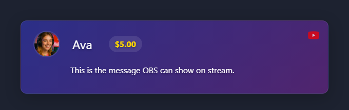

Get chat into OBS with the fewest moving parts.
Make up one short session ID and use it everywhere. It is how your chat source, dock, and OBS overlay find each other.
YOUR_SESSION_ID
Not sure which source mode to use? See the Platform Setup Picker.
The dock is your test screen. Open it before changing OBS settings.
https://socialstream.ninja/dock.html?session=YOUR_SESSION_ID

In OBS, add a Browser Source and paste the overlay URL.
https://socialstream.ninja/featured.html?session=YOUR_SESSION_ID

For regular chat overlay layouts, use a template from the Templates Gallery.
Check one thing at a time, in this order.
session.More details: Troubleshooting.